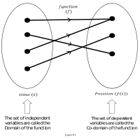
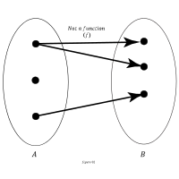
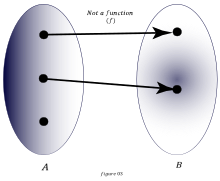

01. Definition of a Function.
- Function is simply a rule that tells how something depends on another thing.
- As an example you know that the earth rotates around the sun with time. Hence The position of the earth depends on time. So we say, the position of the earth is a function of time.
- Here, the time \((t)\) is called the independant variable and, the position of the earth \((P)\) at time \((t)\) is the dependant variable.
-
Therefore, we denote
$$P\ =\ f(t)$$ which is said as " \(P\) is a function of \(t\)"
- You may be not familiar with mathematical notations, but keep in your mind that this tells you that "The \(Position(P)\) is a function of \(Time(t)\)" or "At \(Time(t)\) the position of the earth is denoted by \(f(t)\)"
- Some people think \(f(t)\) means \(f\) multiplied by \(t\) and that is a serious misunderstanding



- Examples of some mathematical functions